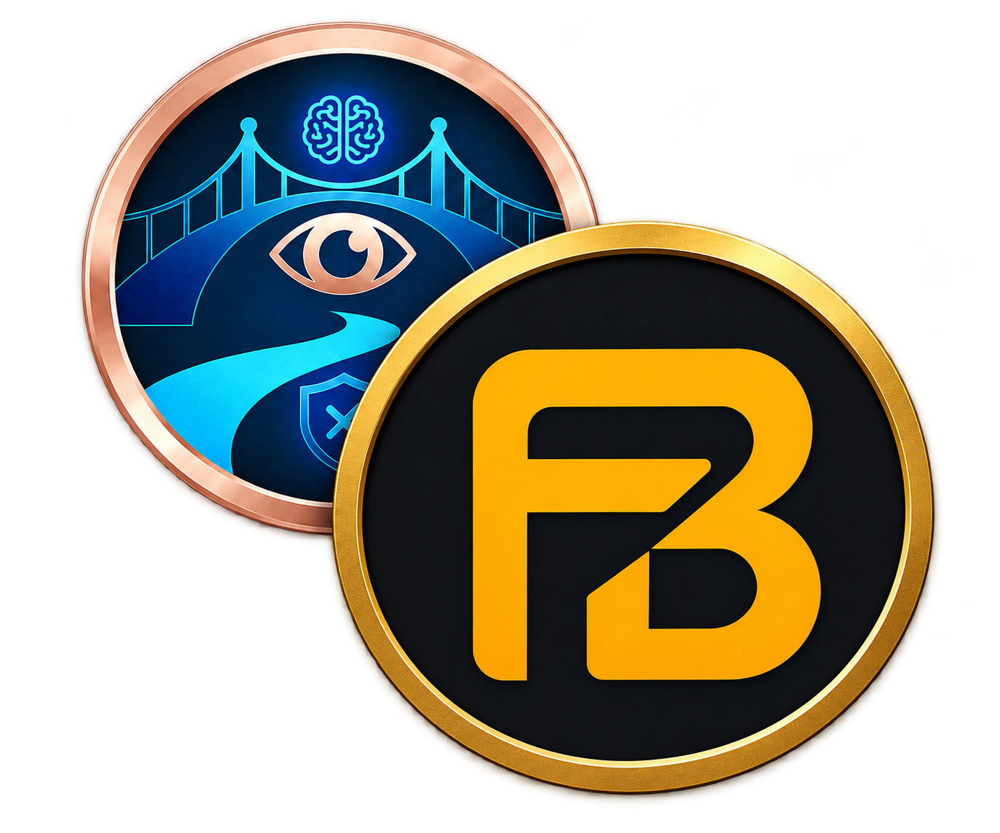

✦
Set your intent
Name the work that matters before your session begins.
FocusBridge AI v2 gives you an optional, calm workspace for planning, focus, useful tools, and the little details that make a routine stick. You decide whether it becomes your New Tab page.

Name the work that matters before your session begins.
Run a session directly from your homepage, then finish with intention.
Keep your important time zones visible while you work.
Hold on to the small reminder or task you do not want to lose.
Make the place you start browsing feel like your own.
Choose the appearance that works with your space and time of day.
YOUR HOMEPAGE, EXPLAINED
It is fully optional. To enable it, open Settings and turn on FocusBridge Homepage; leave it off and your New Tab page opens Google instead.
Set a clear focus intent. It gives the timer context and helps you return to the work you meant to do.
Start your focus session from the homepage. When you are done, end the session and reset cleanly for what comes next.
See a world clock, add Stickpost reminders, and use a theme or wallpaper that makes the page genuinely pleasant to return to.
Choose a custom homepage background, then switch between light and dark themes. It is your browser's starting point, so it should feel like yours.
Keep time zones you care about in sight and catch quick thoughts as Stickpost notes, without breaking the flow of your session.
QUICK TOOLS ON ANY PAGE
Quick Tools stay out of your way until you need them: capture an area, open Flynote for a persistent scratchpad, or convert units without leaving the page.
Open capture mode, draw a clean selection box, see its dimensions, and save or copy the result from the page you are currently viewing.
A persistent writing pad for pasted text, ideas, and temporary notes. What you write remains there when the panel or Chrome closes, until you choose Clear.
Convert length, weight, and temperature values on the fly, without opening a separate search or calculator tab.
Every Quick Tool is your choice. Open Settings, turn on only the tools you want, then optionally enable their matching 1.5-second hold shortcut beneath each tool.
NEW FOCUS SIGNAL
Turn on FocusedEyes in Settings, then start it from the eye icon in the tools dock when you are settling in to watch or learn.
During a long learning video, it helps turn passive watching into active attention with occasional, low-distraction prompts. The eye stays gold while it is getting a feel for the session, then its pulse turns green when your attention looks steady or warm red when it may be time for a small reset. It is feedback, not a judgment.
PRIVACY IS THE DEFAULT
FocusBridge is designed local-first. Your homepage preferences, intent, timer state, Stickpost items, Flynote draft, Quick Tool settings, screenshots, and local activity data stay in Chrome's local extension storage on your device.
Clear and transparent: Recall Anchor is an optional feature. Only if you deliberately configure and use it, the selected page text is sent directly to the AI provider you choose (Google Gemini or OpenAI) so it can respond. It is not used by the homepage or Quick Tools, and it is not hidden data sharing.
Use the Settings wrench to change wallpaper and theme, shape homepage behaviour, choose Quick Tools, and decide whether each hold shortcut is active. The homepage gives you the core controls without opening the extension popup.